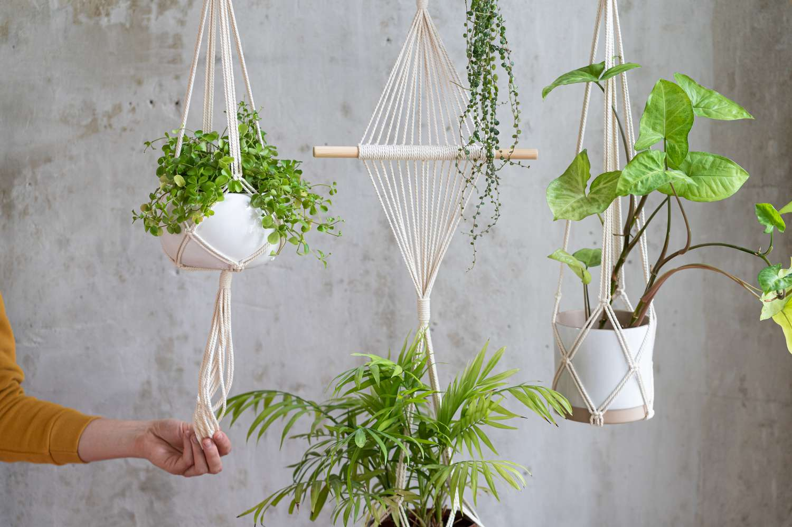
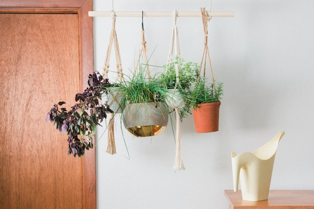
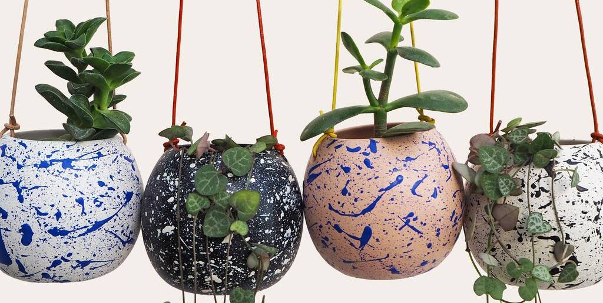
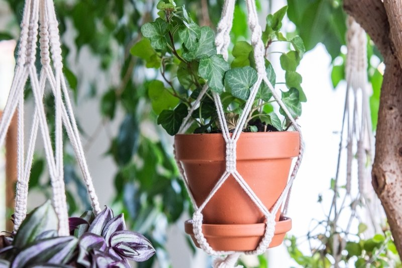

Pot hanger plants, also known as hanging plants or hanging basket plants, are a popular choice for gardeners and indoor plant enthusiasts alike. They are characterized by their trailing or cascading growth habit, which makes them ideal for hanging baskets, pots, or containers. Pot hangers not only add visual interest and beauty to any space but also maximize the use of vertical space, making them an excellent choice for small gardens or areas with limited floor space. Here is a detailed overview of pot hanger plants, covering various aspects from plant selection to care and maintenance:
1.Plant Selection: Consider the lighting conditions in the area where you plan to hang your pot hanger plants. Some plants thrive in bright, indirect light, while others can tolerate low light conditions. Choose plants accordingly. Take into account the climate conditions of your region. Some pot hanger plants are better suited for indoor environments, while others can thrive outdoors in specific climates. Research the specific care requirements of different pot hanger plant species. Consider factors such as water needs, temperature tolerance, humidity preferences, and growth habits.Consider the lighting conditions in the area where you plan to hang your pot hanger plants. Some plants thrive in bright, indirect light, while others can tolerate low light conditions. Choose plants accordingly. Take into account the climate conditions of your region. Some pot hanger plants are better suited for indoor environments, while others can thrive outdoors in specific climates. Research the specific care requirements of different pot hanger plant species. Consider factors such as water needs, temperature tolerance, humidity preferences, and growth habits.
2. Container Selection: Choose containers with drainage holes to prevent waterlogging and ensure healthy root growth. Opt for containers made of materials that can withstand outdoor conditions if you plan to hang your plants outside. Plastic, clay, ceramic, or woven baskets are popular choices. Consider the weight of the plant and the potting medium when selecting a suitable hanging mechanism. Ensure that the container has sturdy hooks or chains for hanging.Choose containers with drainage holes to prevent waterlogging and ensure healthy root growth. Opt for containers made of materials that can withstand outdoor conditions if you plan to hang your plants outside. Plastic, clay, ceramic, or woven baskets are popular choices. Consider the weight of the plant and the potting medium when selecting a suitable hanging mechanism. Ensure that the container has sturdy hooks or chains for hanging.
3. Potting Mix: Use a well-draining potting mix specifically formulated for container plants. A quality potting mix ensures proper aeration and moisture retention for the roots. A typical potting mix consists of a blend of peat moss, perlite, vermiculite, and organic matter. This combination provides a balanced environment for root development and nutrient absorption. Good drainage is crucial, so add a layer of small stones or broken pottery at the bottom of the container to facilitate water flow.
Planting and Maintenance: Fill the container with the potting mix, leaving enough space for the plant's root ball. Gently remove the pot hanger plant from its nursery container, being careful not to damage the roots. If the roots are tightly bound, gently tease them apart to encourage outward growth. Place the plant in the prepared container, ensuring it is centered and at the desired height. Adjust the potting mix if necessary. Firmly press the potting mix around the root ball to provide stability but avoid compacting it too much. Water the plant thoroughly after planting, allowing excess water to drain away. Ensure the soil is evenly moist but not waterlogged. Hang the container in a suitable location based on the plant's light requirements. Most pot hanger plants prefer bright, indirect light, but some can tolerate lower light conditions. Regularly check the moisture level of the potting mix and water as needed. Avoid overwatering, as it can lead to root rot, and do not let the soil dry out completely. Fertilize the pot hanger plants during the growing season with a balanced, water-soluble fertilizer. Follow the manufacturer's instructions for application rates and frequency. Monitor the plant for any signs of pests or diseases. Inspect the leaves, stems, and undersides of the foliage regularly. If pests are present, take appropriate measures to control them using organic or chemical methods. Prune the pot hanger plants as needed to maintain their shape and encourage bushier growth. Trim back any leggy or overgrown stems to promote new growth and maintain an attractive appearance.
Tilting mount brackets allow the TV to be tilted up or down, providing flexibility in adjusting the viewing angle. They are useful when the TV needs to be mounted at a higher position or when glare needs to be minimized.Tilting mount brackets allow the TV to be tilted up or down, providing flexibility in adjusting the viewing angle. They are useful when the TV needs to be mounted at a higher position or when glare needs to be minimized.Tilting mount brackets allow the TV to be tilted up or down, providing flexibility in adjusting the viewing angle. They are useful when the TV needs to be mounted at a higher position or when glare needs to be minimized.
Pest and Disease Control:Common pests that can affect pot hanger plants include aphids, mealybugs, spider mites, and scale insects. Regularly inspect the plants for signs of infestation, such as distorted leaves, sticky residue, or visible insects. Use organic insecticidal soaps or horticultural oils to control pests. Follow the instructions provided and ensure the product is safe for the specific plant species. Prevent the occurrence of fungal diseases by providing good air circulation around the plants. Avoid overwatering and ensure the plants have enough space between them to reduce humidity levels. If fungal diseases do occur, treat them with appropriate fungicides or natural remedies recommended for the specific disease.
By paying attention to these detailed guidelines, you can create a stunning display of pot hanger plants that will thrive and enhance the beauty of your space. Remember to adjust the care routine based on the specific needs of the plant species you choose, as each plant may have slightly different requirements. Happy gardening!
They provide a simple and effective way to hang mirrors. J-Hook brackets feature hooks that are attached to the wall and hold the mirror's top edge. They provide a simple and effective way to hang mirrors. J-Hook brackets feature hooks that are attached to the wall and hold the mirror's top edge. They provide a simple and effective way to hang mirrors. J-Hook brackets feature hooks that are attached to the wall and hold the mirror's top edge. They provide a simple and effective way to hang mirrors.
Common pests that can affect pot hanger plants include aphids, mealybugs, spider mites, and scale insects. Regularly inspect the plants for signs of infestation, such as distorted leaves, sticky residue, or visible insects. Use organic insecticidal soaps or horticultural oils to control pests. Follow the instructions provided and ensure the product is safe for the specific plant species. Prevent the occurrence of fungal diseases by providing good air circulation around the plants. Avoid overwatering and ensure the plants have enough space between them to reduce humidity levels. If fungal diseases do occur, treat them with appropriate fungicides or natural remedies recommended for the specific disease.
Pot hanger plants tend to produce long, trailing stems. Regular pruning helps maintain a compact, bushy shape and encourages new growth. Trim back leggy or overgrown stems to promote branching and encourage a fuller appearance. Some trailing plants, like ivy or pothos, can be trained to grow in a particular direction by attaching them to a support structure, such as a trellis or wire frame. This can add an extra element of design to your hanging plant display.Pot hanger plants tend to produce long, trailing stems. Regular pruning helps maintain a compact, bushy shape and encourages new growth. Trim back leggy or overgrown stems to promote branching and encourage a fuller appearance. Some trailing plants, like ivy or pothos, can be trained to grow in a particular direction by attaching them to a support structure, such as a trellis or wire frame. This can add an extra element of design to your hanging plant display.Pot hanger plants tend to produce long, trailing stems. Regular pruning helps maintain a compact, bushy shape and encourages new growth. Trim back leggy or overgrown stems to promote branching and encourage a fuller appearance. Some trailing plants, like ivy or pothos, can be trained to grow in a particular direction by attaching them to a support structure, such as a trellis or wire frame. This can add an extra element of design to your hanging plant display.Pot hanger plants tend to produce long, trailing stems. Regular pruning helps maintain a compact, bushy shape and encourages new growth. Trim back leggy or overgrown stems to promote branching and encourage a fuller appearance. Some trailing plants, like ivy or pothos, can be trained to grow in a particular direction by attaching them to a support structure, such as a trellis or wire frame. This can add an extra element of design to your hanging plant display.
Fill the container with the potting mix, leaving enough space for the plant's root ball. Gently remove the pot hanger plant from its nursery container and place it in the prepared container. Ensure that the plant is centered and at the desired height. Add more potting mix around the root ball, firming it gently to provide stability. Leave some space at the top to accommodate watering. Water the newly potted plant thoroughly, allowing excess water to drain away. Ensure that the soil is evenly moist but not soggy. Hang the container in a suitable location that meets the plant's light requirements. Most pot hanger plants prefer bright, indirect light, although some species can tolerate low light conditions. Regularly check the moisture level of the potting mix and water as needed. Avoid overwatering or allowing the soil to completely dry out. Fertilize the pot hanger plants during the growing season with a balanced, water-soluble fertilizer. Follow the manufacturer's instructions for application rates and frequency.
By paying attention to these detailed guidelines, you can create a stunning display of pot hanger plants that will thrive and enhance the beauty of your space. Remember to adjust the care routine based on the specific needs of the plant species you choose, as each plant may have slightly different requirements. Happy gardening!